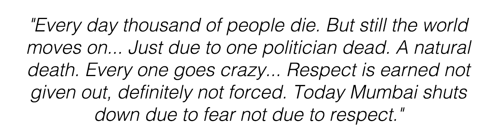
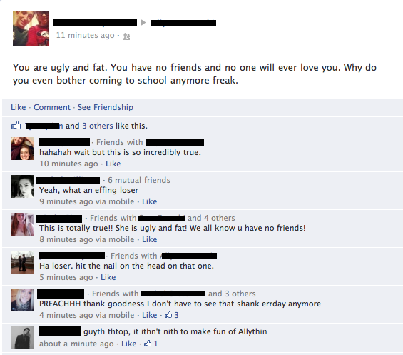
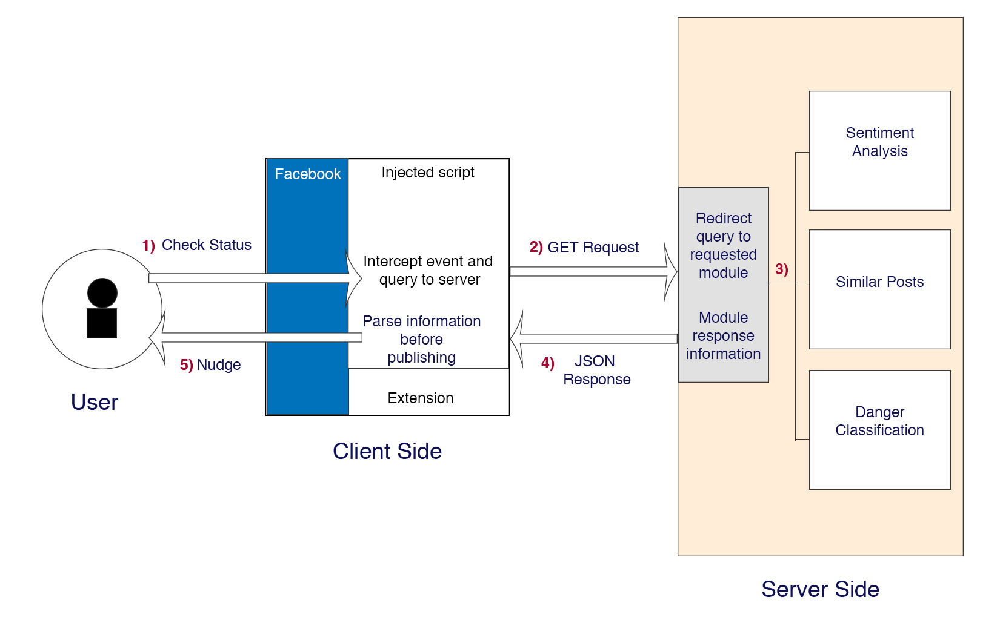
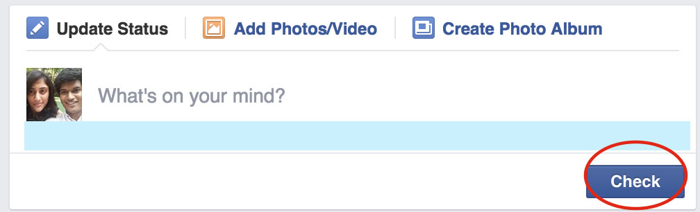
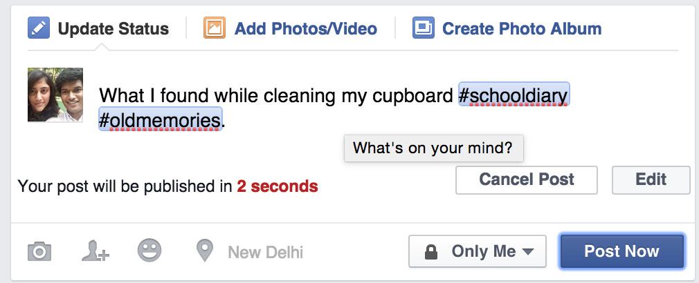
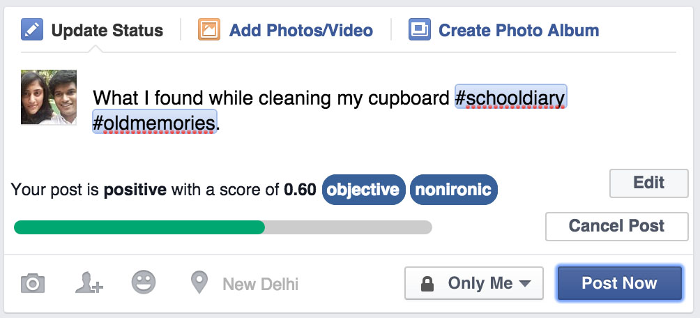

StatusCheck
Predict a Reddit user's vulnerability to harassment
Introduction
In the 2nd decade of the 21st century, social media is often used as the primary channel to broadcast one’s views. Amidst this plethora of statements in the web space, arguably a significant proportion of these opinions are politically incorrect, harassing or strongly obscene.Many such posts often lead to larger problems. Sometimes users get arrested. At other times they might get targeted by others, leading them to take drastic measures.
We prototype a light weight chrome extension for Facebook users to receive just-in-time persuasive nudges before they publish their post. The aim of this is to improve posting practices online.
My Role
I got hands on with this project during final summer of undergrad. I closely worked with, Niharika Sachdeva a PhD student at IIIT-Delhi associated with the research group, Precog who guided me with her prior research in this space. Our primary investigator for this endeavour was Dr. Ponnurangam Kumaraguru.
The design and development of the tool itself was largely performed by me alone, with valuable inputs and feedback from others.
Thus, any changes at any of the different planes of UX/UI were all under my belt.
The Problem
Getting in trouble because of posting something inappropriate online is not unheard of today. The cases can vary from cyber-bullying to exposing the world to legally questionable activities. Agreed, there is a strong argument regarding free speech in modern democracies when it comes to cases like this. However, our aim is not to enter the ethical and moral debate regarding whether it is right or wrong. Rather, the problem we deal with is that the way things are today, people who post such content risk facing difficulties and challenges to even keep their head up after. Not to forget, the ripples it creates in their networks.
One of the most unexpected challenges that can arise due to one's social network behaviour is legal ramifications. In the November of 2012, 2 ladies from Mumbai, India were arrested for a post about the death of a regional political leader. In retrospect, the argument has remained that the post in itself was innocuous, or at the very least not vitriolic. However, the state was quick enough to act and had two innocent women had to encounter police handling and angered loyalists. The debate and discussion only emerged after. Thus, it's understandable to see why users need to be preempted before they go through traumatic experience. Especially when they belong to politically volatile environments.

Another challenge faced by many netizens is becoming the target of cyber-bullying or online harassment. What is worse is, that the perpetrators often don't realise they're doing it. Many join in the crowd. Many can't gauge how harmful their words might be, or how it could possibly effect others. Getting a backlash on a post or a comment isn't unheard of. Neither is people herding together to reprimand someone else. Even if the post is eventually deleted it still leads to creating a negative and emotionally intense atmosphere in the web space. And this could lead to fatal consequences, including death.

As with everything on social networks, the problems are generally societal. Yet, it can't be denied that posts are the impetus that starts the fire. What if we could get users to be more careful about there impulsive actions to avoid these situations?
The Solution
To caution the user before a post is published is the simplest way to make them more aware of their actions. Nudging users with information was already being explored. Drawing inspiration from this paper, a new solution was conceived. While the paper mostly dealt with the privacy aspect of posts, the tool we will discuss focuses on the security aspect.
In order to maintain the immersion provided by social media, this tool is packaged in the form of a Chrome browser extension that can provide vital information about a user’s post before it is published as a status.
How it Works
Sentiment
The first intervention we conceived was to simply inform the user what the general sentiment of their status is. After learning this, they get to decide whether they want to execute the post.
We tap into a third party tool, the MeaningCloud API that performs topic extraction on the status and evaluates the sentiment around the extracted topics - This helps perform more contextual analysis of the status. The response from the API provides us different metrics about the status. We pick out a polarity score, a value which varies from -1 to 1. According this value a score tag, a simple letter grade is assigned to a user's status.
Majority
Given that we do function within a society, pushing our individual ideas cannot be done without understanding the conversation about similar themes in the community. Not only is this important for awareness but also sensitisation towards others.
The MeaningCloud API is used to perform extraction of keywords from the status - specific keywords help in narrowing down the search query parameters. The response from that query is provided as keywords to the Twitter Search api to find similar posts on the Twitter space. These posts are quickly assigned a polarity tag via the TextBlob module at the backend.
Protection
If saving a thought or curbing an impulse could decrease the risk of being questioned legally for it, an ideal user would choose to do so.
A classifier was trained before hand with a mean accuracy tested as 84%. The training set consisted of 90 posts that got into trouble (arrests, firing etc.) and 90 safe/generic posts. An SVM classifier is trained on the server using a custom feature set which comprises of a vocabulary and a polarity. The vocabulary included words flagged to be occurring more regularly in posts that get users into trouble. These are further classified into; words that indicate wrong intent: e.g. kill, shoot, bang, hate etc, profane words: e.g. sh*t, f**k, b**ch etc, subject words: e.g. god, boss, police, woman etc, situational words: e.g. die, blood, murder etc, and polarising words: e.g. black, nig**r etc.
We tap into a third party tool, the MeaningCloud API that performs topic extraction on the status and evaluates the sentiment around the extracted topics - This helps perform more contextual analysis of the status. The response from the API provides us different metrics about the status. We pick out a polarity score, a value which varies from -1 to 1. According this value a score tag, a simple letter grade is assigned to a user's status.
The MeaningCloud API is used to perform extraction of keywords from the status - specific keywords help in narrowing down the search query parameters. The response from that query is provided as keywords to the Twitter Search api to find similar posts on the Twitter space. These posts are quickly assigned a polarity tag via the TextBlob module at the backend.
A classifier was trained before hand with a mean accuracy tested as 84%. The training set consisted of 90 posts that got into trouble (arrests, firing etc.) and 90 safe/generic posts. An SVM classifier is trained on the server using a custom feature set which comprises of a vocabulary and a polarity. The vocabulary included words flagged to be occurring more regularly in posts that get users into trouble. These are further classified into; words that indicate wrong intent: e.g. kill, shoot, bang, hate etc, profane words: e.g. sh*t, f**k, b**ch etc, subject words: e.g. god, boss, police, woman etc, situational words: e.g. die, blood, murder etc, and polarising words: e.g. black, nig**r etc.

Functional Prototype

The extension makes subtle changes at the interface level, so that the user doesn’t need to get readjusted. Unlike the traditional view, the “Post” button is now replaced by a “Check” button.

Defers the publishing of a post by a fixed duration. Along with this a new countdown timer is initiated, during which a user may decide to cancel or edit their post. They might also skip the process entirely by pressing the “Post Now” button.

The polarity of the user’s status is analyses. Apart from the sentiment it provides some more information as well (objective/subjective, ironic/unironic).
Fetches up to 10 similar posts from Twitter’s public feed. Not only are the similar posts provided but they are also tagged with a general sentiment so that the user can learn about what other people are saying about the topics he/she is talking about.
Statuses are classified as dangerous or safe. A post is termed dangerous, if it bares resemblance to previous posts that have gotten users arrested or fired or led to any other mishaps.
Future
Since the extension works on the front end without any need of user authentication, there was no relevance of who the poster was, and then tailor the nudges based on their network and profile. However, with access to this network, many new informative nudges can be explored.